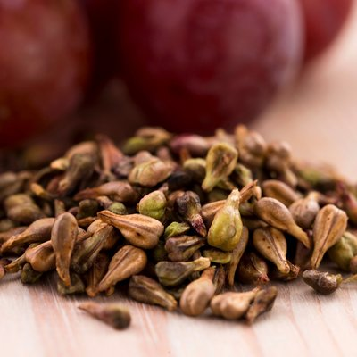
Grapeseed Oil
A lightweight botanical oil that can help improve skin moisture, firmness, and elasticity while minimizing the appearance of fine lines and wrinkles.
What's inside
I use tried and true formulas. Any plants that I am unable to grow myself in Northern Minnesota are obtained from a reputable herbal company that ensures the highest quality, organic and ethically sourced materials.
I have also been creating my own formulas based on the plant knowledge of the benefits and properties of a plant. Each product is produced in small batches with carefully selected ingredients chosen for their purpose and performance.
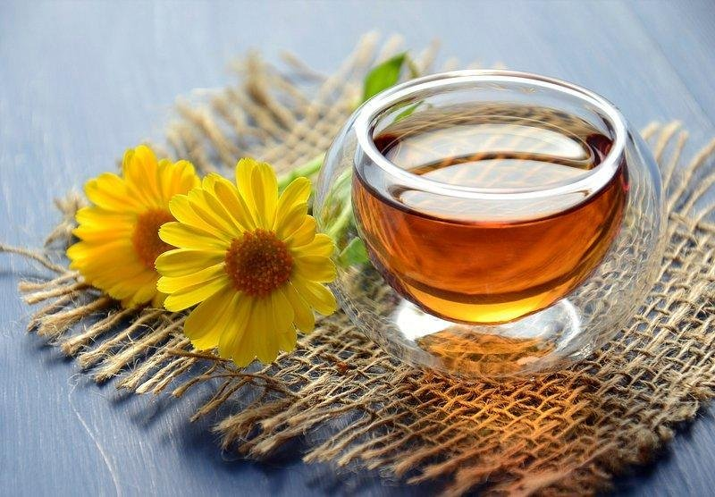
Please note: it's important to perform a patch test on your inner wrist to be sure you don't have a sensitivity to any ingredients that could cause dermatitis or allergic reactions.
My formulations usually include at least one or more of the ingredients listed below. Check the ingredient label on the product for an exact listing of ingredients used in that particular product.

A lightweight botanical oil that can help improve skin moisture, firmness, and elasticity while minimizing the appearance of fine lines and wrinkles.
A lightweight botanical oil that has antiviral and anti-inflammatory properties. High in omega-6 linoleic acid which helps the skin build and repair its natural lipid barrier and lock in moisture. It doesn't clog pores so it's suitable for normal, dry, oily, and acne-prone skin types.
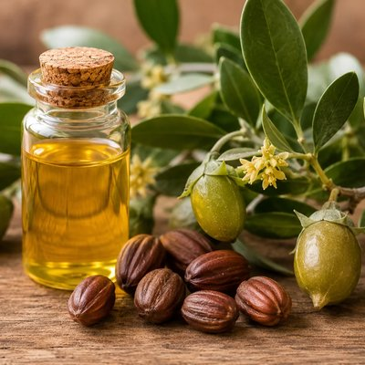
A lightweight botanical oil from a desert plant that deeply moisturizes skin while still maintaining a light feel as it mimics the natural sebum in our skin.
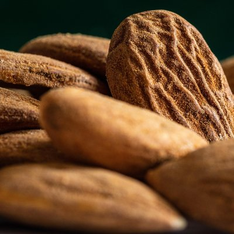
A lightweight, nourishing plant oil that contributes softness by locking in moisture. It fights free radicals and is rich with Vitamin E and A.
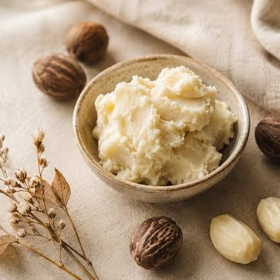
A rich plant butter that softens, soothes, and conditions skin. It's loaded with antioxidants Vitamin E and A which help protect skin from environmental damage.
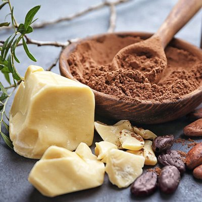
A rich vegetable fat packed with essential fatty acids. It melts at body temperature to penetrate deeply and form a protective barrier that locks in moisture.
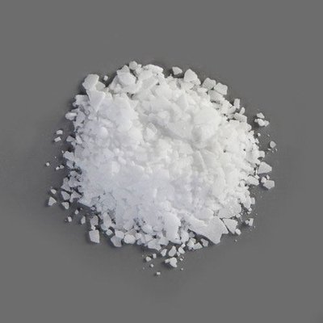
A plant based fatty acid that provides lasting hydration and smooths and softens the skin.
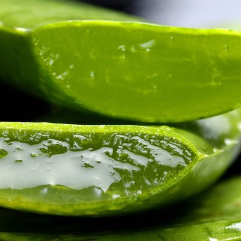
Calming and hydrates irritated skin. It contains vitamins C and E, beta-carotene, and compounds that stimulate collagen and elastin production to improve skin elasticity.
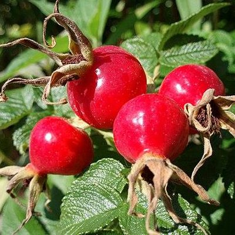
Nutrient dense and considered a dry oil, it has a fast absorption rate that is good for stretch marks, scars and mature skin.
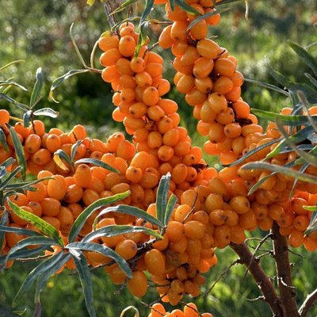
One of the few plant sources containing Omega-7, a fatty acid naturally found in human skin that helps lock in moisture.
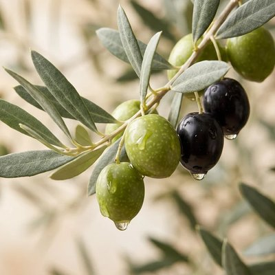
A lightweight, deeply hydrating emollient derived from plants like sugarcane and olives that mimics your skin's natural oils. Unlike heavy plant or mineral oils, it sinks in quickly without leaving a heavy residue.
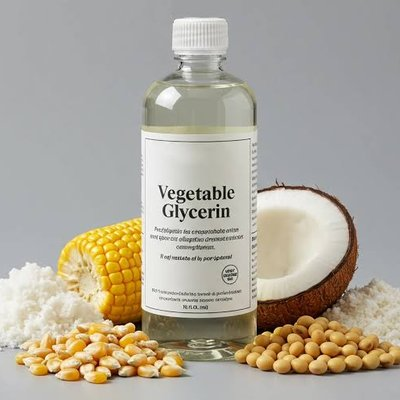
A natural humectant that helps draw in and retain moisture in dehydrated skin cells.
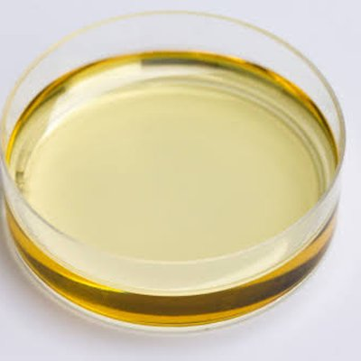
Antioxidant rich, targets inflammation, sun damage, scars and wrinkles. Also used to help protect oils from oxidation.
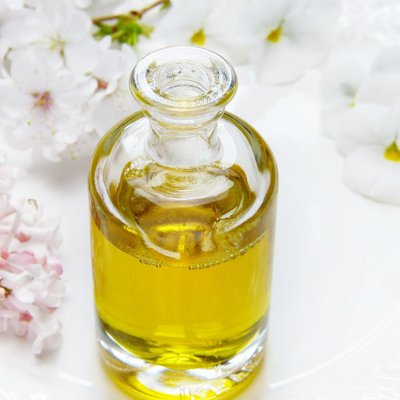
A variety of pure essential oils are used for their scent profile as well as specific properties to enhance the product, and are listed on the individual product label.
Listed here are the plants and their properties I frequently use for infusing into my cold pressed carrier oils.
The soothing restorer. The flowers are dried and used in many of my infusions. Calendula provides antimicrobial benefits and comforting support for rough, dry, sensitive and damaged skin.
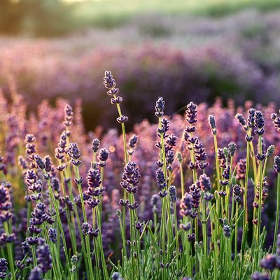
The balancing calmer. It gently purifies the skin's surface while easing redness, breakouts and topical inflammation.
Helps calm inflammation, lighten bruises and can stimulate blood flow, which helps the skin look more refreshed and radiant.
Important: avoid arnica if you are allergic to plants in the Asteraceae/Compositae family, such as sunflowers, marigolds, or ragweed.
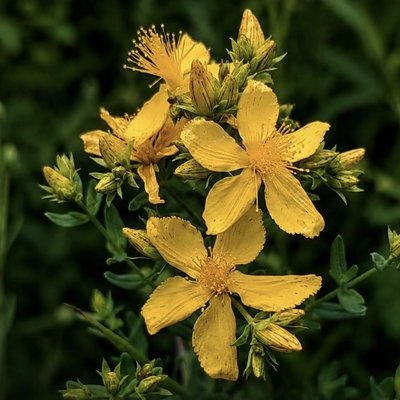
The healer. Traditionally used for minor cuts, scrapes and burns; it supports healing of damaged skin.
Known for cellular renewal. It targets scars, blemishes, bruises, and guards against premature aging.
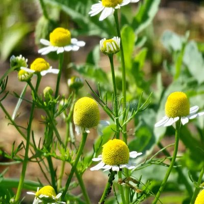
A powerful anti-inflammatory and antioxidant with soothing properties that help calm irritated skin, reduce redness, and support skin regeneration. Also helps to preserve skin elasticity and reduce the look of fine lines.
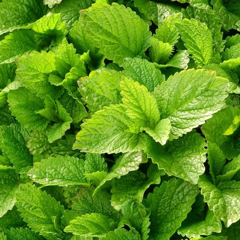
Contains natural tannins that act as a mild astringent, helping to contract and firm the appearance of loose or sagging skin over time.
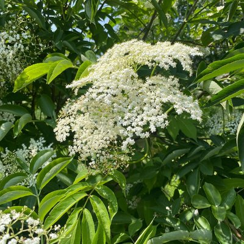
Acts as a natural humectant and contains beneficial fatty acids, helping draw and lock in moisture to keep dry or depleted skin soft and supple.
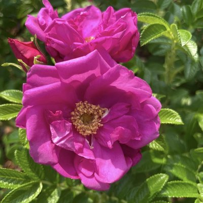
Rose extracts, rose water, and natural rose infused oils are rich in natural sugars and emollients that help lock moisture into the skin and strengthen the skin barrier. Rose also supports natural collagen production and smooths the appearance of fine lines.
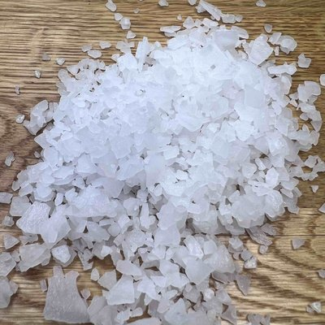
Not plant material but an elemental mineral sourced from the ancient Zechstein seabed. Used in my pain and relaxation balms and lotions for transdermal application to relax muscle tissue, ease muscle spasms and restless tension.
Acts as a natural thickener and stabilizer in creams and balms while sealing in hydration. It forms a breathable, protective barrier on the surface of the skin that prevents water loss without suffocating pores. It also contains natural vitamin A, which supports cell regeneration and helps improve overall skin texture.